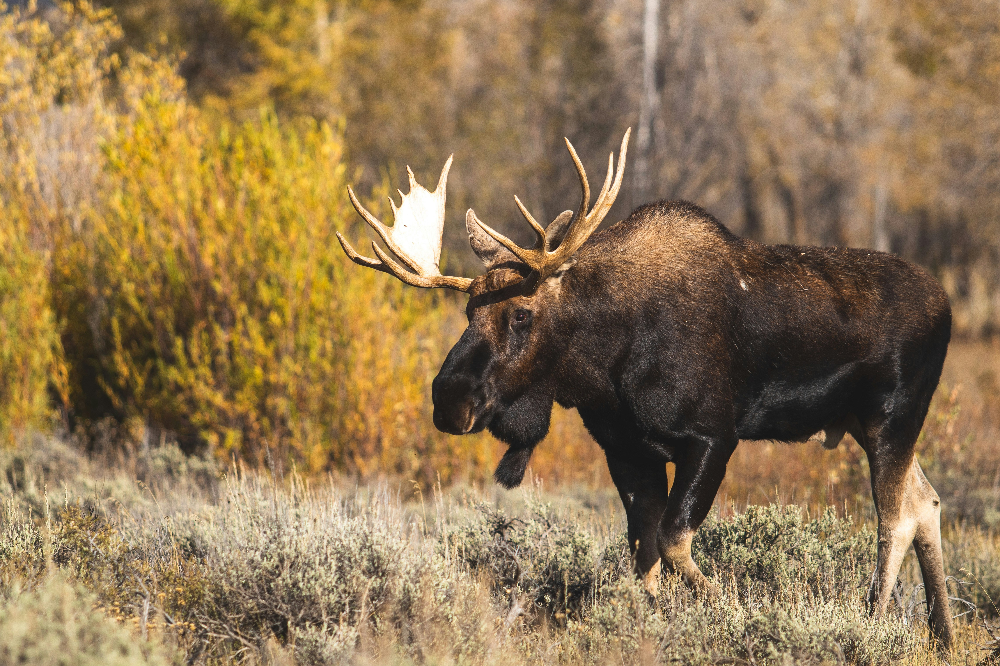

Welcome to the Information page about Finland! Here, you'll find details about the country's history, culture, and more.
History of Finland
Finland has a rich and complex history, shaped by influences from both the East and the West. The region was inhabited by Finno-Ugric tribes thousands of years ago, and it later became part of the Swedish Kingdom in the 12th century. For centuries, Finland remained under Swedish rule until the early 19th century when it was annexed by the Russian Empire in 1809, forming the autonomous Grand Duchy of Finland. In 1917, amidst the turmoil of the Russian Revolution, Finland declared independence and became a sovereign nation.
The History and Culture of the Moomins
The Moomins are a beloved part of Finnish culture, created by Finnish-Swedish author and illustrator Tove Jansson. The first Moomin book, "The Moomins and the Great Flood," was published in 1945, introducing the whimsical world of these round, white troll-like creatures. The series gained popularity through books, comic strips, animated series, and even theme parks.
Moomins represent the Finnish values of adventure, nature, and family. Their stories often emphasize themes of friendship, acceptance, and resilience, reflecting the Finnish spirit. The Moomin World theme park in Naantali, Finland, is a major attraction for fans of all ages.
Hunting Culture in Finland

Hunting is a deeply rooted tradition in Finland, with thousands of hunters participating each year. The country's vast forests and diverse wildlife provide excellent opportunities for sustainable hunting, which plays an essential role in wildlife management and conservation.
The most popular game animal in Finland is the moose. Moose hunting season typically starts in early autumn, around September or October, and lasts until December. Hunters must obtain special permits, and hunting is strictly regulated to maintain a healthy moose population.
Besides moose, other commonly hunted animals include deer, hare, and various waterfowl. Hunting in Finland is not just a sport but a way of life, with many families passing down traditions through generations. Respect for nature and sustainable hunting practices are at the core of Finnish hunting culture.